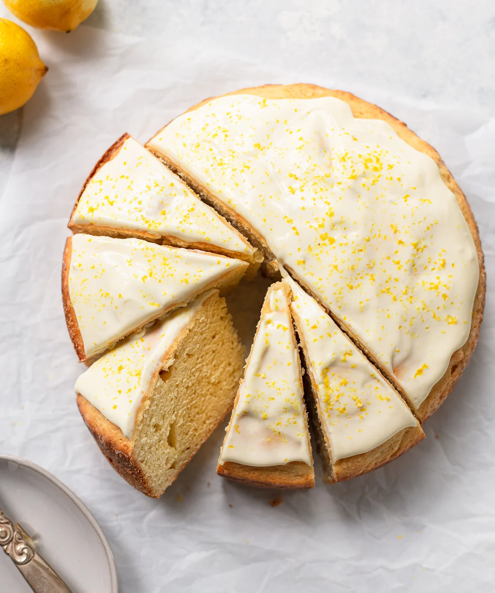

Lemon Ricotta Cake

Description
This lemon cake made with ricotta cheese is airy, fluffy, and super moist. The lemon glaze will take it to another level! If you prefer not to glaze it — dust with powdered sugar for a beautiful presentation.
Ingredients
- 1 ½ cups cake flour
- 1 teaspoon baking powder
- 1 teaspoon baking soda
- ¼ teaspoon salt
- 1 cup white sugar
- ¾ cup butter, softened
- 3 large eggs at room temperature
- 1 (15 ounce) container whole-milk ricotta cheese
- 1 lemon, juiced and zested
- 1 teaspoon lemon extract
- ½ teaspoon vanilla extract
- 1 cup powdered sugar, or as needed
- 2 tablespoons lemon juice, or as needed
- 1 tablespoon lemon zest
Steps
- Preheat the oven to 350 degrees F (175 degrees C). Grease and flour a tube cake or Bundt pan.
- Mix cake flour, baking powder, baking soda, and salt into a large bowl.
- Beat sugar and butter with an electric mixer on medium speed in a separate bowl until light and fluffy, about 3 minutes. Add eggs, 1 at a time, and beat until well combined. Beat in ricotta cheese, lemon juice, lemon zest, lemon extract, and vanilla extract until well blended. Add flour mixture and mix until batter is smooth. Pour batter into the prepared tube pan.
- Bake in the preheated oven until a toothpick inserted into the center comes out clean, 40 to 50 minutes. Cool in the pan for 10 minutes before inverting on a wire rack to cool completely, about 30 minutes.
- Meanwhile, mix powdered sugar, lemon juice, and lemon zest together. Add more lemon juice if the glaze is too thick, or more powdered sugar if it's too thin. Drizzle the glaze over the cooled cake.